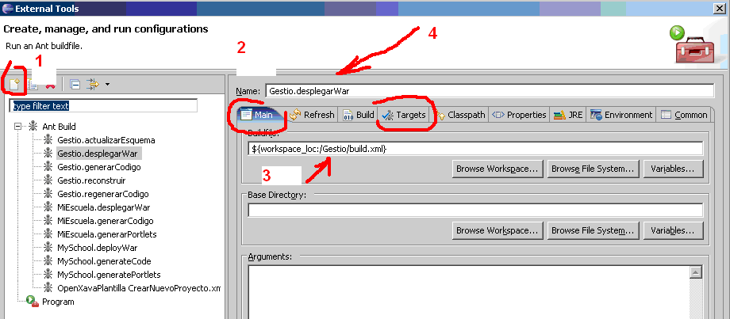
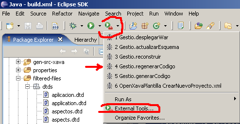

Exécuter des tâches Ant depuis Eclipse
Vous devez avoir auparavant installé le JDK Java et avoir défini la variable d'environnement JAVA_HOME. Jusqu'à présent, l'un des meilleurs aspects d'Eclipse réside dans le fait que tout est installé dans un seul dossier. Un autre aspect important est le fichier build.xml.Le fichier build.xml
Ce fichier comprend certaines tâches exécutées à l'aide d'Apache Ant. Communèment, ces tâches sont :- generateCode : Génère le code source pour la première fois.
- regenerateCode : Génère le code source après n'importe quel changement. Cette tâche remplace tous le code source produit précédemment.
- updateSchema : Utilisé pour créer ou modifier les tables de la base de données.
- deployWar : Utilisé pour rendre tous les fichiers nécessaires disponibles pour le serveur d'application et exécuter votre application.
- rebuild : Pour recompiler le code source
- generatePortlets : Pour que l'application soit exécutable dans un portail (comme Liferay, Stringbeans, ...)
- all : Exécute certaines tâches définies dans le fichier build.xml. C'est la tâche par défaut.
Lancer la tâche par défaut depuis le fichier build.xml
Après avoir placé la souris sur notre fichier build.xml de notre projet et avoir pressé le bouton droit, vous sélectionnez Run As > Ant Build (2) et la tàche par défaut (du fichier build.xml) est exécutée.
Choisir et lancer une tâche du fichier build.xml
En placant la souris sur le fichier build.xml du projet et en cliquant avec le bouton droit, vous pouvez choisir Run As > Ant Build... (3) (remarquez les points de suspension) et choisissez la tâche à exécuter.Définir des outils externes (External Tools)
Une fois les tâches définies, elle peuvent ètre facilement lancées. Pour cela, vous choisissez le symbole qui est placé soit en haut de la fenêtre d'Eclipse ou en sélectionnant le menu contextuel Run As.
qui est placé soit en haut de la fenêtre d'Eclipse ou en sélectionnant le menu contextuel Run As.Nous devons créer une nouvelle tâche avec le symbole en haut à gauche
 (1). Il faut également vérifier que nous nous trouvons dans l'onglet Main (2). Nous contrôlons que le fichier build.xml (3) est bien celui de notre projet et que le nom que nous donnons à la tâche est correct (4).
(1). Il faut également vérifier que nous nous trouvons dans l'onglet Main (2). Nous contrôlons que le fichier build.xml (3) est bien celui de notre projet et que le nom que nous donnons à la tâche est correct (4).A présent, sélectionnons l'onglet Targets. Ici, vous pouvez choisir la tâche Ant et déselectionner les autres. Comme vous pouvez le constater, certains noms de tâche sont en espagnol, mais très semblables en anglais. La tâche "todo" (en anglais "all") est celle par défaut et marquée en bleu.

Finalement, il faut sélectionner l'onglet Refresh et vérifier que l'option "the entire workspace" est bien cochée.
Exécuter une tâche précédemment définie
Une fois des tâches définies, elles peuvent être aisément exécutées. Il suffit de cliquer sur le symbole(comme celle sur la barre d'outil en haut de la fenêtre d'Eclipse). Sinos tâches sont visibles (par exemple celle qui est en quatrième place : 4 Gestio.regenerarCodigo), nous la sélectionnons simplement. Si elles ne sont pas visibles, vous devez choisir l'option External Tools... et la chercher pour la lancer.